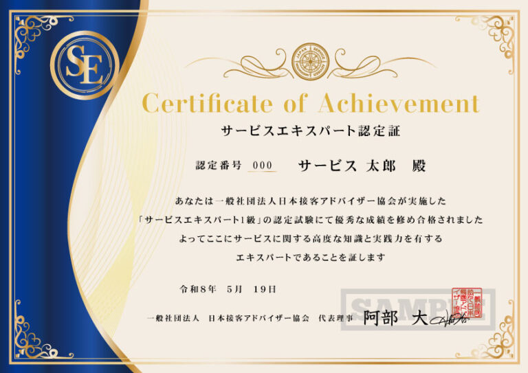

一般社団法人日本接客アドバイザー協会 認定資格
接客歴3年以上の方へ。あなたの接客スキルを、一生物の資格にしませんか。
アパレル・飲食・小売・宿泊・サロンなど、業種を問わず受験できます
現場で頑張るあなたの実力を、客観的に証明する資格です
忙しいあなたも安心。自宅で受験できます
事前に配布されるテキスト（PDF）から出題。テキストを見ながら回答できる形式で、暗記ではなく「正しく理解できているか」を確認します。接客の基本原則・衛生知識・言葉遣いの知識問題と、現場での判断力を問う自由記述問題で構成されます。
提示されたお題に沿って、エアロールプレイ（お客様役なし）をスマホで撮影して提出。自宅の静かな一室で、固定カメラで撮影できます。笑顔・挨拶・所作に加え、「どこにこだわって接客したか」の解説も話していただきます。
試験期間は1週間あるので、都合の良い時間に回答できます。
プロの実力を示す、公式認定証とSEバッジ

履歴書には「一般社団法人日本接客アドバイザー協会認定 サービスエキスパート3級」と正式に記入できます。合格後は協会への入会手続き（入会金11,000円・年会費13,200円、いずれも税込）を行っていただき、1ヶ月程度で認定証とバッジを発行します。
申込から認定証の発行まで
申込締切は2027年1月10日（日）正午です。
エントリー後、3日以内にお支払いをお願いします。基本はStripeによるクレジットカード払い、カードをお持ちでない場合は銀行振込も可能です。
ご入金の確認ができ次第、公式テキスト（PDF）を発行します。
回答フォームが解放されます。筆記への回答と、実技動画のURLを提出してください。
受験締切から3週間程度で、メールにて発表します。
合格後は協会への入会手続きを行っていただき、1ヶ月程度で認定証と認定バッジを発行します。
はじめて受験される方は3級から。段階的に進めます
3級：基礎を身につけた接客人の証申込受付中
受験料 5,500円（税込）。基本的な接客・衛生知識・言葉遣いを備え、「安心して現場を任せられる」実力を認定します。
2級：現場で評価される接客人の証
受験料 22,000円（税込）／2027年実施予定。3級合格後1年以上が条件。客単価の向上や再来店を生み出し、お店の数字に貢献できる実力を認定します。
1級：トップレベルの接客人の証
受験料 44,000円（税込）／2028年実施予定。2級合格後1年以上が条件。「お店の顔」として感動レベルの体験を創造する最高峰のステージです。1級合格者は、指導者資格「接客アドバイザー3級」が免除され、2級から受験できます。
はい。「一般社団法人日本接客アドバイザー協会認定 サービスエキスパート3級」と正式に記入いただけます。
はい。直近の職場の期間だけでなく、これまでの接客業の経験年数の「合算」で3年以上を満たしていれば受験可能です。
規定の課題に合わせたロールプレイング動画を提出していただきます。撮影場所に縛りはなく、ご自宅で撮影できます。
基本的には決済サービス「Stripe」を利用したクレジットカード決済をお願いしています。カードをお持ちでない場合は銀行振込も可能ですので、お気軽にお申し付けください。
なぜサービスエキスパートを創設したのか
AIやDX化が進み、タブレット注文や無人レジが当たり前になりつつある現代。だからこそ、「あなたの接客を受けに来た」と言われるような、人にしかできない体温の通った接客の価値が高まっています。
現場で頑張るスタッフが正当に評価され、自信を持って輝ける「実践的な基準」が必要だ。その想いで、机上の空論ではなく「現場で本当に使えるスキル」を認定する制度を立ち上げました。
申込締切は 2027年1月10日（日）正午 です
3級に申し込む（受験料5,500円）